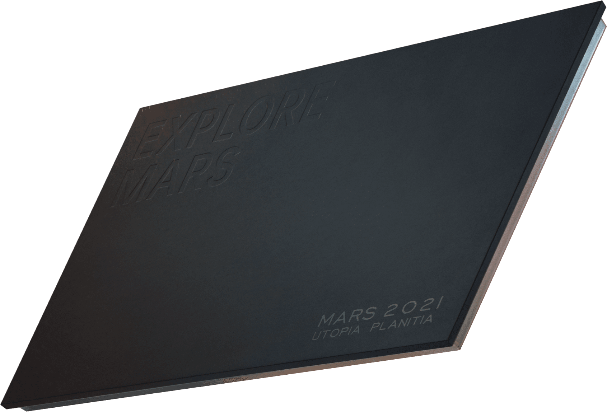
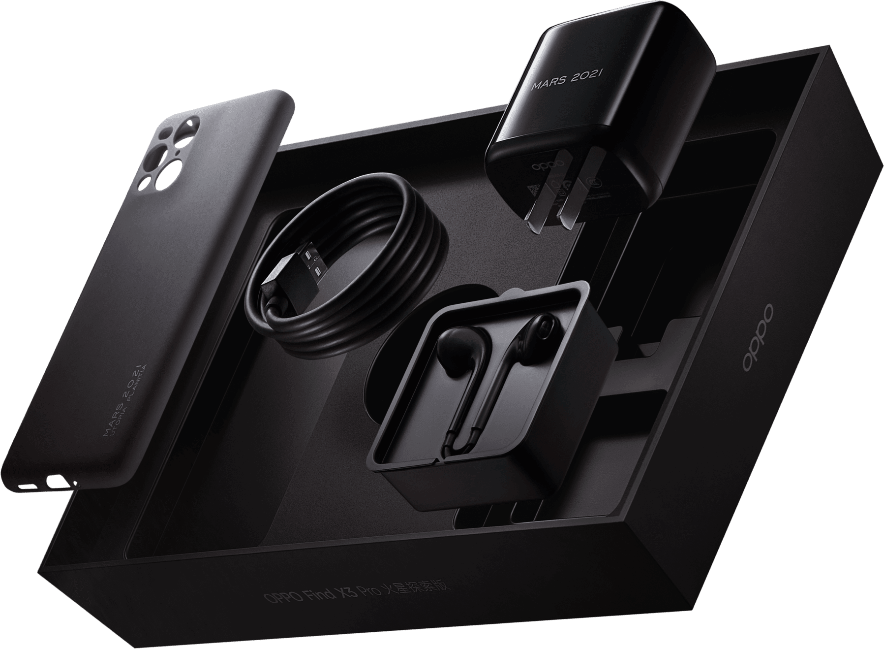
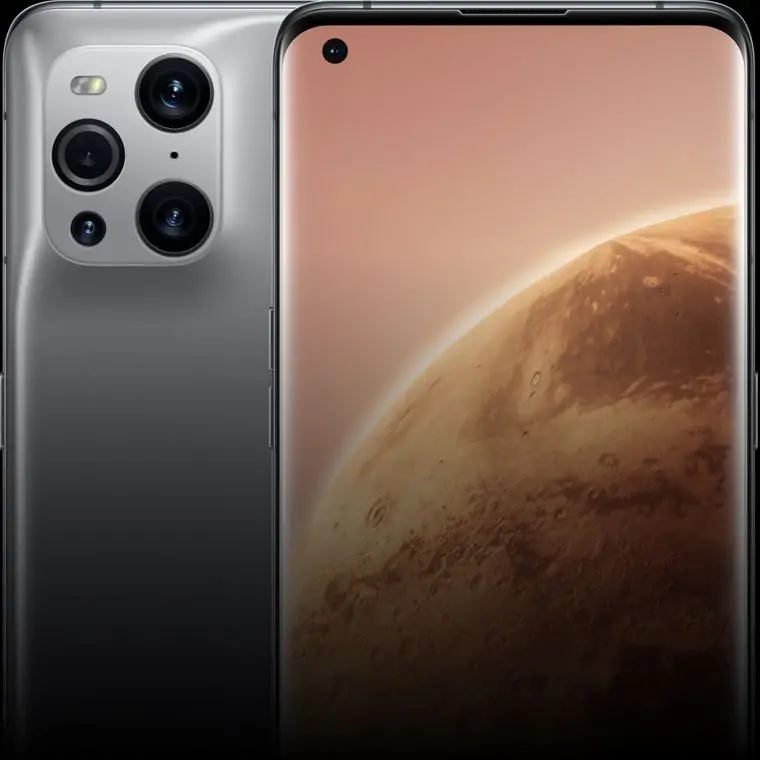
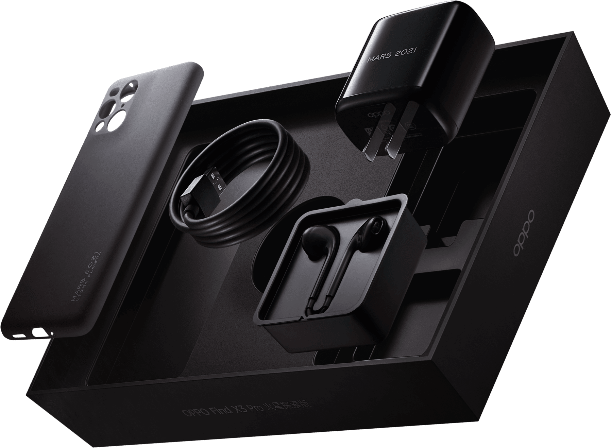
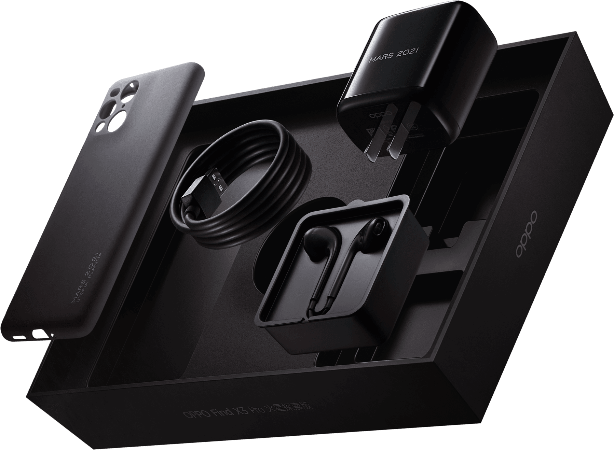
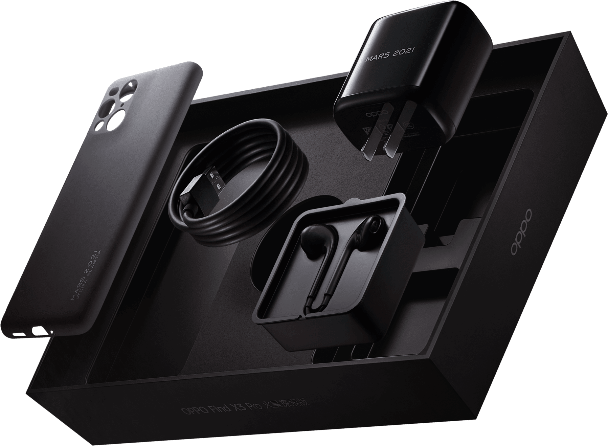
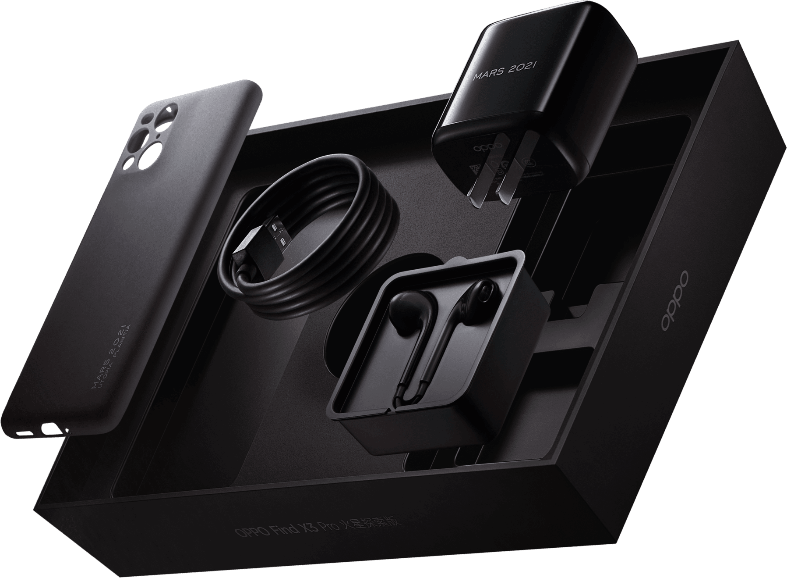
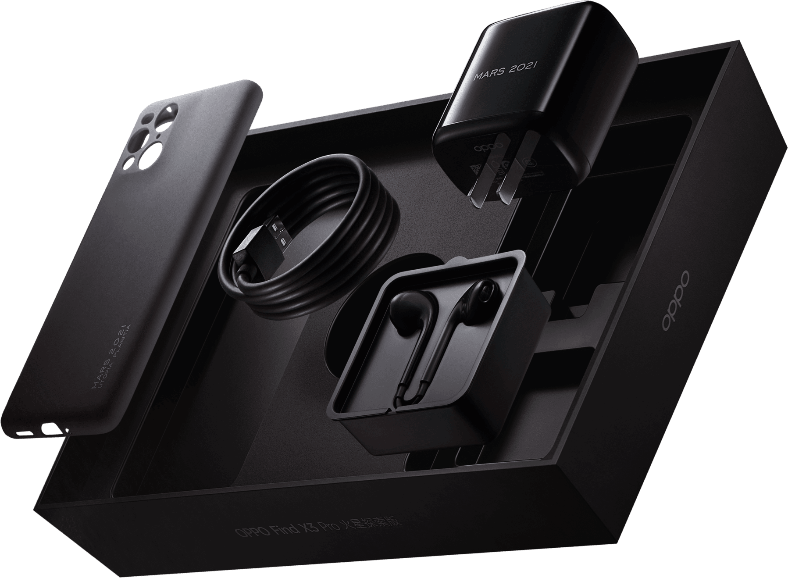
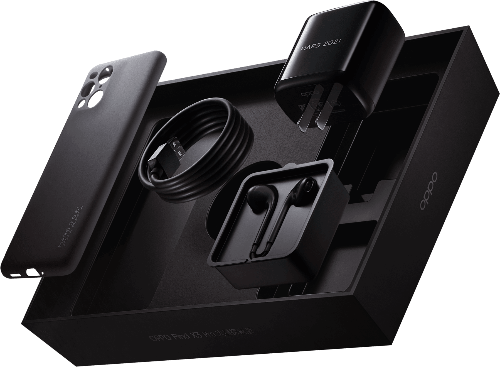

全面了解色彩影像旗舰
从捕捉、储存到显示全程 10 亿色²，隔着屏幕都能感受照片里的喜怒哀乐。
色彩唤醒感动，满满创新，等你慢慢揭开。
探索更多 Find X3 系列

10 亿色，
打开手机色彩新世界
搭载全链路 10bit 色彩引擎，重写手机与色彩的定义。
影像可捕捉前所未有的丰富细节、存储忠实无损，屏幕呈现细腻惊艳。10 亿色彩在每个环节澎湃奔涌，如此绚丽利器，静候你解锁。
 




